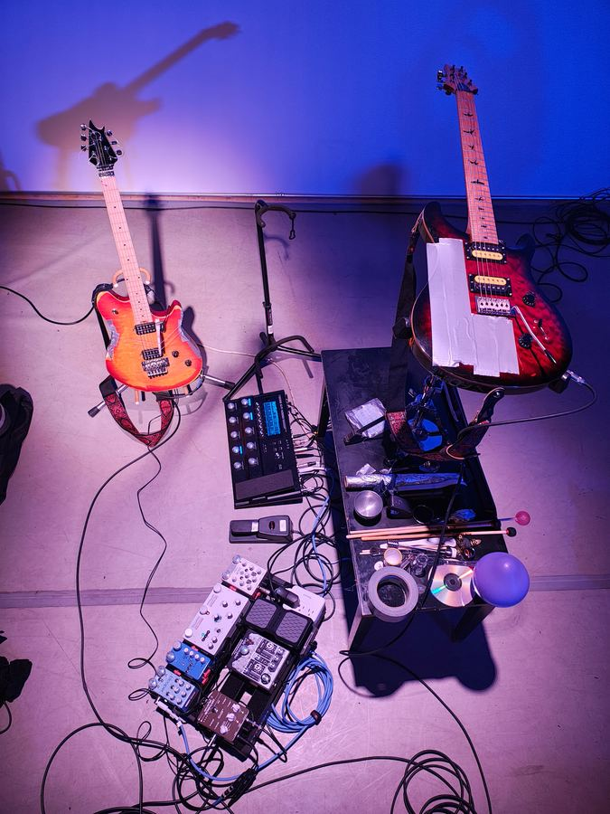
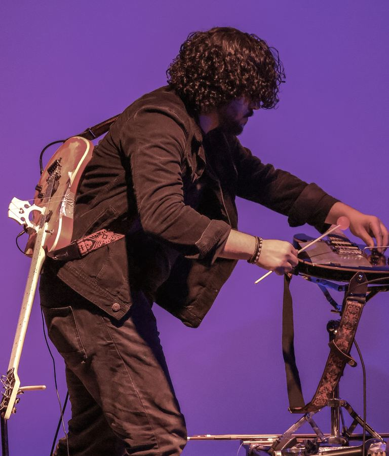
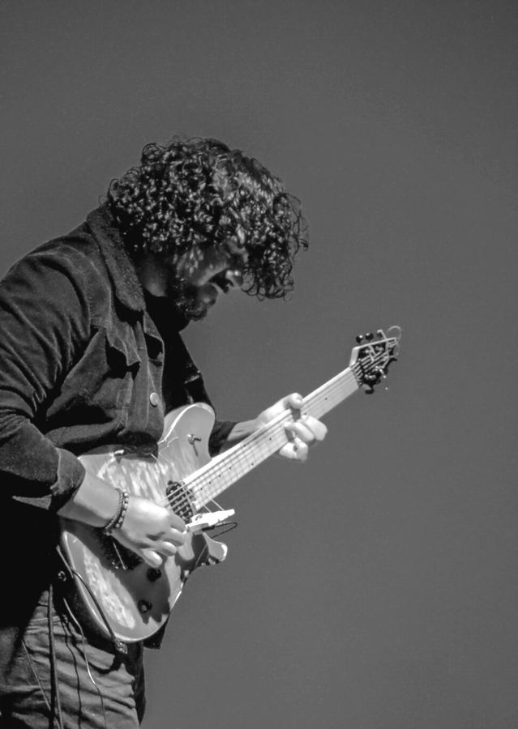
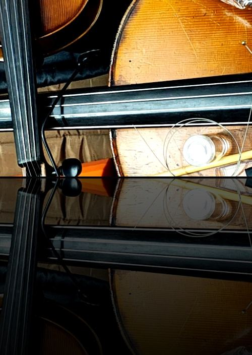
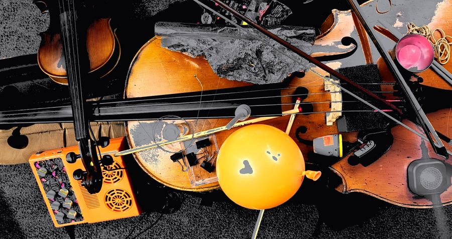
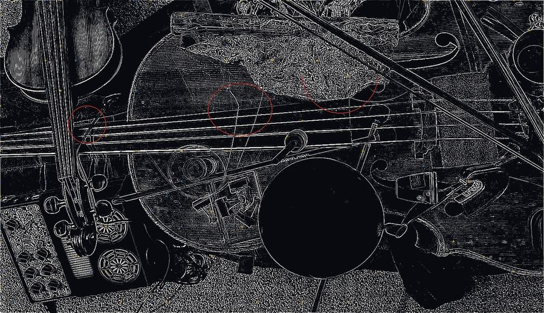
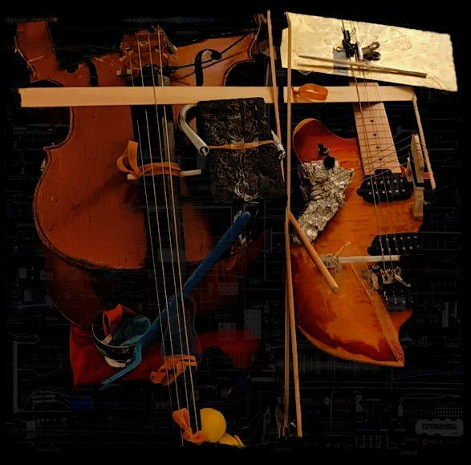

Danniel Ribeiro
Composer, Sound Artist & Performer

Enter


Danniel Ribeiro
Ph.D.
Composer, Sound Artist & Performer
Works
Performance
Research & Teaching
Contact
Compositions
Other Works
←
1/10
→
Other Compositions
Watch
EN
PT


EN
PT


Salvador, Bahia, BR
← → flip pages · click score to zoom · esc close
soundcloud.com/danniel-ferraz-ribeiro